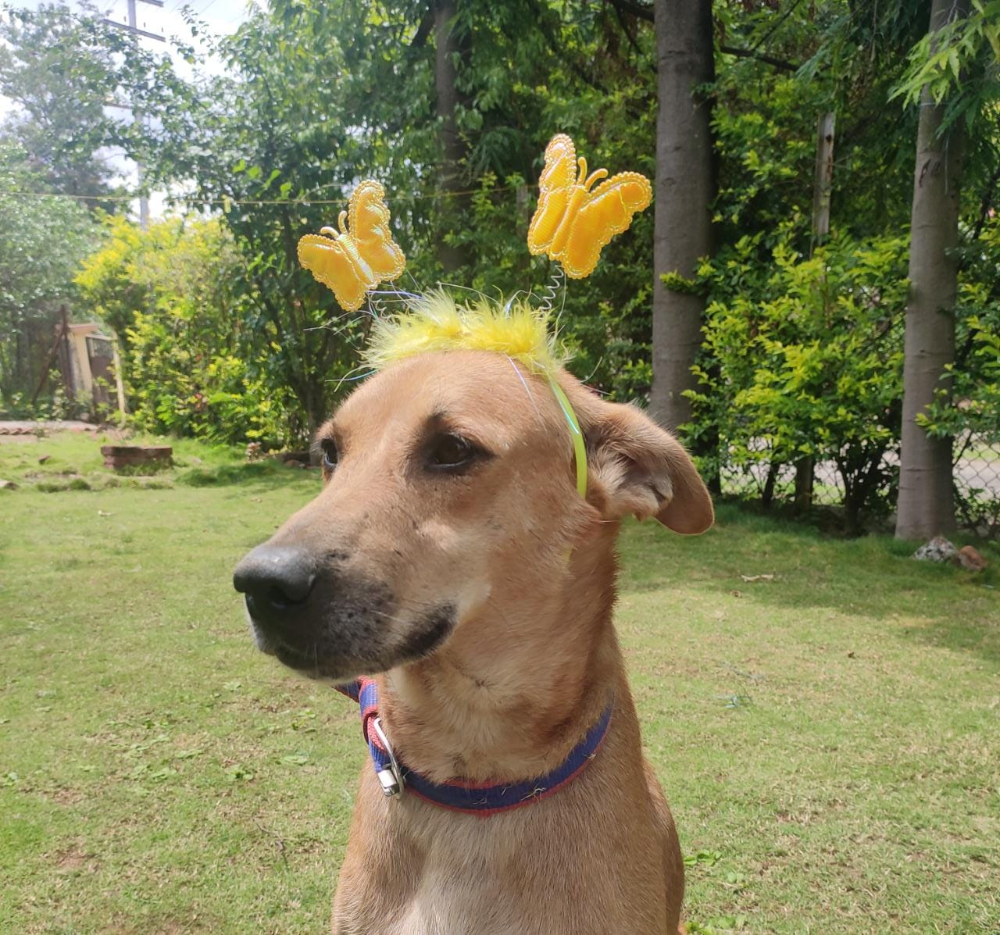
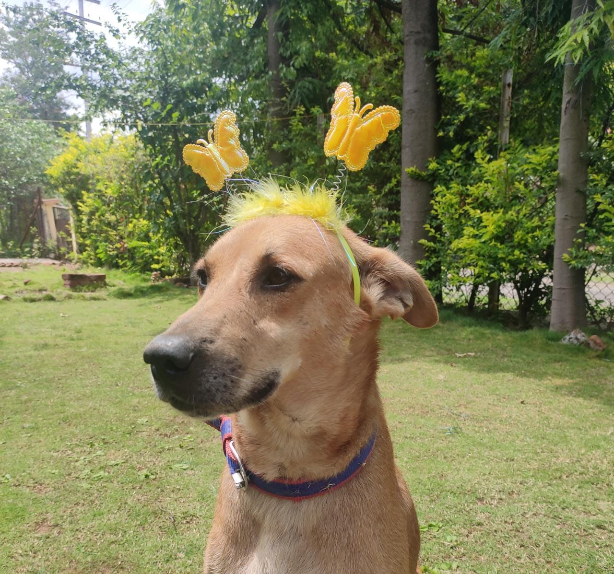

Pets 🕠🈠seems to be the best home freinds of yours💖.The way you care ğŸ¼ğŸ—and worry ğŸ•â€ğŸ¦ºabout all of them shows your love and affection towards themğŸ—ï¸ The way u take an inquired cat🱠to home and take care of her was â¤ï¸ğŸ¥ºğŸ™ŒğŸ™Œ. Also then u manage to keep both ur pets a 🕠and a 🈠who generally are of opposite nature is beyond what can be expected. We hope u will save (Vanshika & Akshita)🣠from dogs and all animals because they are scared of them a lot.😔😂
 
